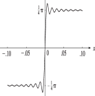
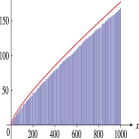

Chapter 6 Exponential, Logarithmic, Sine, and Cosine Integrals


- Notation
-
Properties
- 6.2 Definitions and Interrelations
- 6.3 Graphics
- 6.4 Analytic Continuation
- 6.5 Further Interrelations
- 6.6 Power Series
- 6.7 Integral Representations
- 6.8 Inequalities
- 6.9 Continued Fraction
- 6.10 Other Series Expansions
- 6.11 Relations to Other Functions
- 6.12 Asymptotic Expansions
- 6.13 Zeros
- 6.14 Integrals
- 6.15 Sums